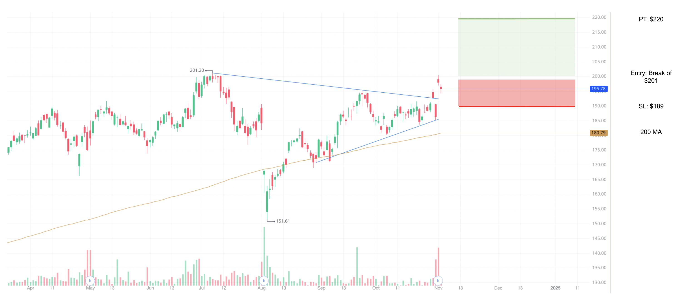
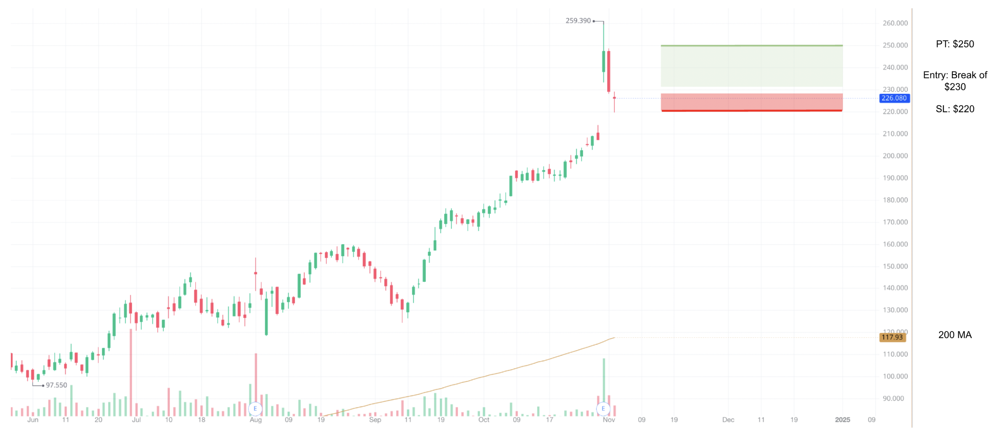

Trading Signal 1 - 11/04/2024
Evercore (EVR)
Profitable Trade: 23%
Summary:
Favorable macroeconomic and seasonal conditions, including a rate-cutting cycle that can boost corporate debt and M&A activity, and thus enhance profit margins and revenue growth, present a near-term buying opportunity for Evercore (EVR). Not only that, but the firm’s reliance on non-interest income positions and a strong recent performance, including a 28% increase in adjusted net revenues and positive seasonal trends in advisory deals, positions it well amongst other financial institutions in a changing interest rate environment.
1D Chart:
Trade Details:
Entry Point: $263.76
Upside Target (PT): $290
Stop Loss (SL): $254
Time-Range: Near-Term (Approximately 1 - 3 Months)
Key Levels: $250, $255, $260, $270, $290 + Lower Trendline
Macroeconomic Considerations:
The recent launch of a rate-cutting cycle and expectations for it to continue into 2025 provide an ideal backdrop for a soft landing and a revival in corporate debt and equity issuances, as well as mergers and acquisitions. A lower interest rate environment can also support financing and underwriting activities, stimulate economic activity through operational expansions in debt issuance and M&A, and contribute to heightened investment product demand, all of which can help boost Evercore’s profit margins and net revenue growth. Not only that, but the past few years have seen weakness in financial advisory services due to high interest rates, elevated inflation, and geopolitical concerns, so a resurgence in the space will bode well with investors on a historical basis.
Seasonal Considerations:
According to the Institute for Mergers, Acquisitions, and Alliances (IMAA), December is historically the month with the highest frequency of deals, and October typically consists of the highest value of deals. Since the majority of Evercore’s net income originates from advisory fees, this seasonal growth in deals is likely to enable the firm to generate more profit.
Comparative Considerations:
While I expect the financial industry to perform well as a whole and similar firms absolutely can be considered for trades, I have selected Evercore amongst others due to its recent and projected growth and its positioning in the industry. For one, according to each company’s quarterly filing (also known as 10-Qs), firms like Bank of America (BAC), JP Morgan (JPM), and Citigroup (C) rely heavily on net interest income (NII). In contrast, those like Goldman Sachs (GS), Morgan Stanley (MS), and Evercore (EVR) rely more on non-interest income originating from operations like market making, investment banking, and investment management. For reference, NII measures a bank's profit from lending and borrowing money. For example, the % of YTD total revenue (net of interest expense) composed of NII is 54.55% for BAC and 51.36% for JPM. On the other hand, the same is 16.33% for GS, 13.31% for MS, and 0% for EVR. This is important to consider as a component of comparative analysis as the impact of the rate-cutting cycle on NII is unclear since it will depend on how loan volume changes relative to the contraction in interest margins, and firms have already posted lower guidance in the space. This can provide institutions like Goldman Sachs, Morgan Stanley, and Evercore with an advantage in terms of market sentiment and revenue outlooks.
Brief Company Considerations:
Evercore posted adjusted net revenues up 28% YoY, with adjusted operating income and EPS increasing significantly, by 63% and 57% respectively. Advisory fees and underwriting fees also saw substantial increases of 30% and 43%, and the company projects increased M&A activity and strong restructuring performance in 2025 as well as growth in the ECM business that may increase market share.
Exit-Based Circumstances:
I do not see any concrete foreseeable circumstances that may encourage a trade exit. For one, the presidential election is unlikely to impact the trade in the short-run, unless either Trump or Harris were to emphasize potentially negative views of the financial industry (e.g., heightened taxation, which can influence profit margins and internal investments). Two, most financial institutions (e.g., GS, MS, BAC, C, JPM, WFC, etc.) have already reported promising earnings reports, so there are no significant earnings reports to be reported soon that can impact the trade. Third, geopolitical tensions and macroeconomic events are unlikely to affect it.
Amazon (AMZN)
Profitable Trade: 9.4%
Summary:
Favorable macroeconomic and seasonal conditions, including a rate-cutting cycle and holiday season that should boost consumer spending and advertising revenues, present a near-term buying opportunity for Amazon.com (AMZN). Not only that, but its recent strong earnings report and dominance in both retail and cloud services positions it well against competitors. However, external political or sector-related events may impact the stock in the short run.
1D Chart:
Trade Details:
Entry Point: Break of $201
Upside Target (PT): $220
Stop Loss (SL): $189
Time-Range: Near-Term (Approximately 1 - 3 Months)
Key Levels: $185, $190, $195, $200 + Upper & Lower Trendlines
Macroeconomic Considerations:
The oncoming rate-cutting cycle can stimulate economic activity in the form of consumer and business spending, contributing to higher e-commerce sales and bullish market sentiment.
Seasonal Considerations:
The holiday season typically significantly boosts Amazon’s sales and revenues due to the popularity of online shopping. Heightened consumer spending on gifts, particularly during peak shopping periods like Black Friday, Cyber Monday, Christmas, and New Year’s, tends to contribute to much higher sales. Sellers also look to showcase their products to a wider audience, so the firm’s advertising business will benefit. While the high volume of orders will require Amazon to scale up its operations and inventory demands (thus raising operating costs), the company has successfully undergone restructuring in the past and increased efficiency, and its advertising and product revenues are likely to offset any potential margin declines.
Comparative Considerations:
Amazon’s main competitors are Target, Walmart, Best Buy, and Costco on the retail side, and Oracle, Microsoft, and Google on the web and cloud services side. In retail, Amazon stands out as a result of an expansive customer base supported by a subscription model, superiority in e-commerce (in terms of market share, online revenue growth, etc.), and its breadth of products and services. In web and cloud services, Amazon remains dominant. The company showed the strongest growth in its advertising business, is investing in data centers and equipment (which are crucial to AI technology), recently launched several cloud and e-commerce-based AI products, has extensive market share in public cloud services at 32% (compared to Azure with 23% and Google Cloud with 10%), and recently formed a strategic partnership with Oracle that seamlessly enables autonomous database access and thus streamlines enterprise workload migrations and improves data integration and management for customers.
Brief Company Considerations:
Amazon recently released an earnings report that highlighted an 11% YoY increase in net sales, a significant 19% YoY increase in net sales from AWS, a 55% YoY increase in operating income, a 55% increase in net income, a 123% YoY increase in trailing twelve months free cash flow. The company also reported Q4 guidance, projecting net sales to have grown between 7% and 11% YoY and operating income to have grown between 21% and 52% YoY.
Exit-Based Circumstances:
The main potential circumstances that may encourage a trade exit include political or sector-related events. Some examples include Trump or Harris presenting negative policy or personal views on the tech sector or retail economy, a large tech-based company like NVDA reporting poor earnings, harmful international or domestic news being released regarding operations, etc.
Carvana (CVNA)
Profitable Trade: 10%
Summary:
Favorable macroeconomic and seasonal conditions, including a rate-cutting cycle and holiday season consisting of higher shopping volumes, and a recent earnings report present a near-term buying opportunity for Carvana Co (CVNA). With regard to the firm’s recent earnings report, the company reported Q3 adjusted EBITDA of $429M (190% greater than Q3 2023 and 28% above estimates), a 34% YoY Q3 retail volume increase, and significantly positive Q4 guidance for both areas. They have successfully turned the business around through cost-cutting operations and restructuring this past year, after falling from an all-time high of $376.83 in August 2021 to an all-time low of $3.55 in December 2022 due to high interest rates and near-bankruptcy struggles. Despite some current concerns about the firm’s profitability measures, its recent earnings can validate bullish momentum in these next few weeks, and, as a result, the recent dip from $260 is an opportunity.
1D Chart:
Trade Details:
Entry Point: Break of $230
Upside Target (PT): $250
Stop Loss (SL): $220
Time-Range: Short-Term (Approximately 1 Month)
Key Levels: $215, $220, $230, $235, $240, $250, $260
Other Trade Ideas:
If the stock moves past $220 to the downside, a short-term trade may be viable, where you buy puts and expect a gap fill to $214/$215. Be aware that derivatives-based trading can be dangerous and can cause rapid losses if the underlying moves against you. If it then closes the gap, enter a long position near $210, with a SL of $195 and variable PTs along the key levels of $230, $235, $240, $250, and $260. Keep in mind that it is perfectly fine to trim positions or sell when comfortable.
Reasoning:
The primary points have been made in the Summary section.
Exit-Based Circumstances:
I do not see any concrete foreseeable circumstances that may encourage a trade exit. For one, the presidential election is unlikely to impact the trade in the short run, given that neither Trump nor Harris have provided much detail on their views on transportation-based policies that could impact Carvana. Two, geopolitical tensions and macroeconomic events are unlikely to affect it.